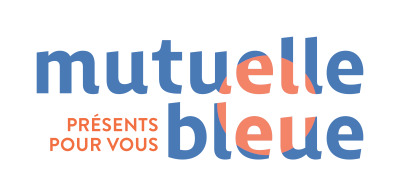

À travers cette présentation, je vais vous présenter le contenu de mon rapport de stage. Durant mon stage de 5 semaines, du lundi 5 juin 2023 au vendredi 7 juillet 2023, au sein du service informatique de l’entreprise Mutuelle Bleue à Melun, j’ai approfondi mes connaissances en HTML, CSS, PHP et JavaScript.
Ma mission principale était de créer un tableau capable de lire et trier un fichier Excel contenant différentes informations liées aux missions des services.
J’ai également réalisé des exercices en PHP pour créer des formulaires et tableaux.
Cliquez pour accéder au Rapport de Stage : Ouvrir le Rapport de Stage 1ère année
Ce stage de 5 semaines s’est déroulé du lundi 8 janvier 2024 au vendredi 9 février 2024, au sein de l’entreprise Adeisse à Fontainebleau Avon. J’ai approfondi mes compétences en HTML, CSS, PHP et JavaScript.
Ma mission principale consistait à développer un tableau capable de charger un fichier texte contenant des informations produits (Référence, Date, Quantité, etc.).
J’ai également suivi des formations sur OpenClassrooms pour renforcer mes compétences.
Cliquez pour accéder au Rapport de Stage : Ouvrir le Rapport de Stage 2ème année
Ma veille technologique portait sur l’automobile et les nouvelles technologies. Grâce à Feedly, j’ai suivi plusieurs comptes spécialisés comme “L’Automobile Magazine”.
J’ai suivi les dernières actualités sur les modèles de voitures et les nouvelles fonctionnalités : capteurs, caméras, interfaces vocales, stationnement automatique, etc.
Voici un document présentant les différentes procédures techniques réalisées durant mes deux années de BTS SIO.
Cliquez pour accéder aux Procédures Techniques : Ouvrir les Procédures Techniques